3 Convolutional Neural Networks
3.1 Motivation and Inductive Biases
Why CNNs for Images? Fully-connected networks treat each pixel independently, ignoring spatial structure. For a 224×224 RGB image, the first layer alone would require ~150K weights per neuron—leading to overfitting and computational infeasibility.
Key Inductive Biases:
- Locality: Nearby pixels are more related than distant ones
- Translation Equivariance: Objects can appear anywhere in the image
- Hierarchical Composition: Low-level edges → mid-level textures → high-level objects
CNNs encode these biases through local connectivity (receptive fields), weight sharing (same filter across spatial locations), and hierarchical stacking (deeper layers see larger regions).
3.2 Convolutional Layers
3.2.1 Standard Convolution
Definition: A convolutional layer applies a learnable filter (kernel) \(\mathbf{K} \in \mathbb{R}^{k \times k \times c_{\text{in}}}\) to an input tensor \(\mathbf{X} \in \mathbb{R}^{h \times w \times c_{\text{in}}}\) via discrete convolution (technically cross-correlation):
\[\mathbf{Y}[i,j,c_{\text{out}}] = \sum_{c=1}^{c_{\text{in}}} \sum_{p=0}^{k-1} \sum_{q=0}^{k-1} \mathbf{X}[i+p, j+q, c] \cdot \mathbf{K}[p,q,c,c_{\text{out}}] + b_{c_{\text{out}}}\]
where \(\mathbf{Y} \in \mathbb{R}^{h' \times w' \times c_{\text{out}}}\) is the output.
Below is an animation illustrating how a standard convolution kernel slides across the input and produces feature activations.
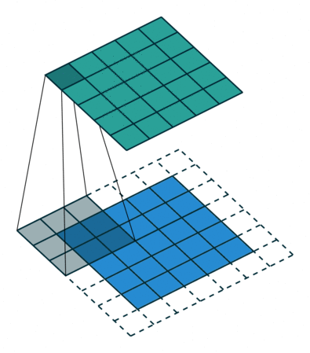
Key Hyperparameters:
| Parameter | Description | Typical Values |
|---|---|---|
| Kernel size \(k\) | Receptive field dimension | 3×3 (most common), 5×5, 7×7 |
| Stride \(s\) | Step size when sliding filter | 1 (default), 2 (downsampling) |
| Padding \(p\) | Border handling | 0 (‘valid’), \((k-1)/2\) (‘same’) |
| Input channels \(c_{\text{in}}\) | Depth of input | 3 (RGB), 64, 128, … |
| Output channels \(c_{\text{out}}\) | Number of filters | 64, 128, 256, 512 |
Output Spatial Dimensions: \[h' = \left\lfloor \frac{h + 2p - k}{s} \right\rfloor + 1, \quad w' = \left\lfloor \frac{w + 2p - k}{s} \right\rfloor + 1\]
Parameter Count: \(k \times k \times c_{\text{in}} \times c_{\text{out}} + c_{\text{out}}\) (weights + biases)
Example: A 3×3 conv with \(c_{\text{in}}=64\), \(c_{\text{out}}=128\) has \(3 \times 3 \times 64 \times 128 + 128 = 73{,}856\) parameters.
Translation Equivariance: If input \(\mathbf{X}\) is shifted by \((dx, dy)\), output \(\mathbf{Y}\) shifts by \((dx/s, dy/s)\): \[\text{Conv}(\text{Shift}(\mathbf{X})) = \text{Shift}(\text{Conv}(\mathbf{X}))\]
This property is critical for object detection—detecting a car at different locations uses the same learned features.
3.2.2 Dilated Convolutions
Also called Atrous Convolutions, or Convolution with Holes.
Definition: Insert zeros (holes) between kernel elements to increase receptive field without adding parameters:
\[\mathbf{Y}[i,j] = \sum_{p,q} \mathbf{X}[i + r \cdot p, j + r \cdot q] \cdot \mathbf{K}[p,q]\]
where \(r\) is the dilation rate.

Effective Receptive Field:
- Standard 3×3: covers 3×3 region
- Dilated 3×3 with \(r=2\): covers 5×5 region
- Dilated 3×3 with \(r=3\): covers 7×7 region
Applications:
- Semantic Segmentation (DeepLab): Maintain spatial resolution while expanding receptive field
- Audio (WaveNet): Exponentially growing receptive fields (\(r = 2^{\ell}\) at layer \(\ell\))
Interview Insight: “Why dilated convolutions in segmentation?” Answer: Pooling reduces resolution (bad for dense prediction). Dilated convs increase receptive field without losing spatial detail.
3.2.3 Deformable Convolutions
Standard convolutions use fixed sampling grids. Deformable convolutions learn adaptive sampling locations, allowing receptive fields to deform based on image content.
Definition: Augment standard convolution with learnable 2D offsets \(\{\Delta p_n\}\):
\[\mathbf{Y}[i,j] = \sum_{p_n \in \mathcal{R}} \mathbf{X}[i + p_n + \Delta p_n] \cdot \mathbf{K}[p_n] \]
where \(\Delta p_n = (\Delta x_n, \Delta y_n)\) is the learned offset for location \(p_n\) in the grid \(\mathcal{R}\).
Mechanism: A parallel convolution predicts \(2k^2\) offsets (x,y for each kernel position), then the main convolution samples from these deformed locations (using bilinear interpolation for fractional offsets).
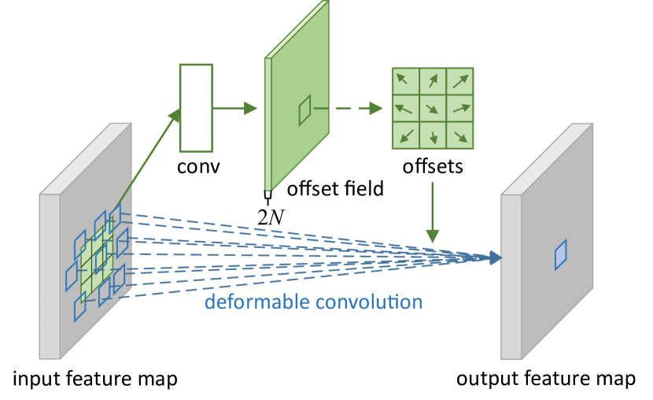
Key Advantages:
- Receptive field adapts to object scale/shape—thin objects get elongated fields, large objects get expanded fields—all learned automatically.
- Unlike Dilated Convolutions, which use fixed sparse sampling,
Deformable Convolutions learn where to sample (content-adaptive), with minimal parameter overhead (~1 extra conv layer for offset prediction).
Applications: Object detection (Deformable DETR); semantic segmentation (better boundaries); video modeling (motion adaptation).
3.2.4 Transposed Convolutions
Also called Deconvolutions.
Purpose: Upsample spatial dimensions—opposite of standard convolution.
Mechanism:
- Insert zeros between input pixels (dilate input by stride \(s\))
- Apply standard convolution with stride 1
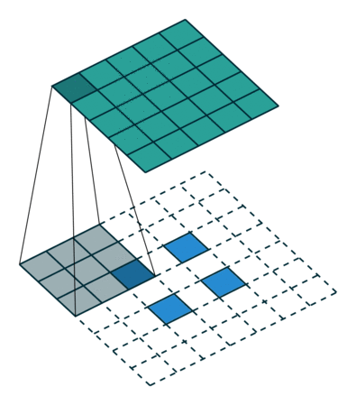
Output Size: For input \(h \times w\), kernel \(k\), stride \(s\), padding \(p\): \[h_{\text{out}} = s \cdot (h-1) + k - 2p\]
Checkerboard Artifacts: Overlapping receptive fields cause uneven coverage.
Solution: Use \(k\) divisible by \(s\), or replace with Upsample + Conv:
nn.Upsample(scale_factor=2, mode='bilinear')
nn.Conv2d(in_channels, out_channels, kernel_size=3, padding=1)Applications: U-Net decoder, GAN generators, semantic segmentation upsampling.
3.2.5 Depthwise Separable Convolutions
Motivation: Standard convolutions are expensive. For input \(h \times w \times c_{\text{in}}\) and output \(h \times w \times c_{\text{out}}\):
- Standard: \(k^2 \cdot c_{\text{in}} \cdot c_{\text{out}} \cdot h \cdot w\) operations
- Depthwise Separable: Factorize into two steps
Algorithm:
Depthwise Convolution: Apply one \(k \times k\) filter per input channel \[\mathbf{Z}[i,j,c] = \sum_{p,q} \mathbf{X}[i+p,j+q,c] \cdot \mathbf{K}_{\text{depth}}[p,q,c]\] Output: \(h \times w \times c_{\text{in}}\) (same channels)
Pointwise Convolution: 1×1 conv to mix channels \[\mathbf{Y}[i,j,c_{\text{out}}] = \sum_{c=1}^{c_{\text{in}}} \mathbf{Z}[i,j,c] \cdot \mathbf{K}_{\text{point}}[c, c_{\text{out}}]\] Output: \(h \times w \times c_{\text{out}}\)
The following illustration shows the two steps of a separable convolution.
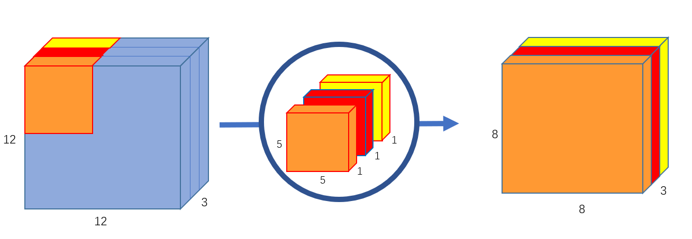
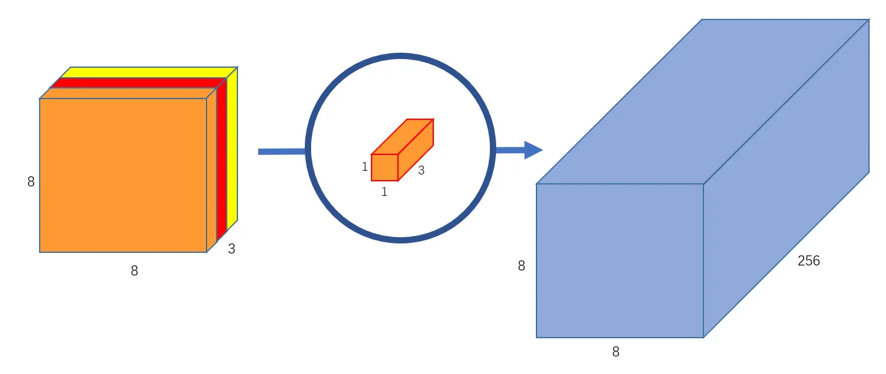
Left: Depthwise convolution applies one spatial filter per input channel.
Right: Pointwise \(1 \times 1\) convolution mixes channel information. This factorization drastically reduces computation while preserving expressiveness (used in MobileNet). Image source: (Wang 2018)
Complexity Reduction: \[\frac{\text{Depthwise Sep}}{\text{Standard}} = \frac{k^2 \cdot c_{\text{in}} + c_{\text{in}} \cdot c_{\text{out}}}{k^2 \cdot c_{\text{in}} \cdot c_{\text{out}}} = \frac{1}{c_{\text{out}}} + \frac{1}{k^2}\]
For \(k=3\), \(c_{\text{out}}=128\): ~8-9× fewer parameters with minimal accuracy loss.
Use Cases: MobileNets; EfficientNets (mobile/edge deployment); Xception (competitive with ResNet at lower cost).
3.3 Pooling and Downsampling
Pooling Layers: Reduce spatial dimensions while retaining important features.
Unlike convolutions, pooling is a channel-wise, non-learnable operation.
Max Pooling: \[\mathbf{Y}[i,j,c] = \max_{p,q \in \text{Window}} \mathbf{X}[si + p, sj + q, c]\]
- Retains strongest activations (preserves edges/features)
- Non-differentiable at non-max locations (subgradients used in backprop)
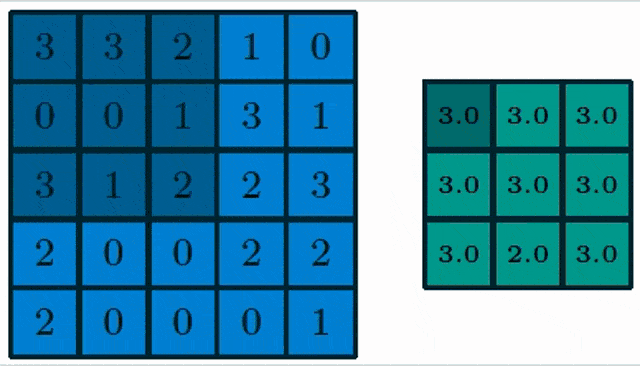
Average Pooling: \[\mathbf{Y}[i,j,c] = \frac{1}{k^2} \sum_{p,q \in \text{Window}} \mathbf{X}[si + p, sj + q, c]\]
- Smoother downsampling
- Less common in modern architectures
Global Average Pooling (GAP): \[\mathbf{Y}[c] = \frac{1}{h \cdot w} \sum_{i=1}^h \sum_{j=1}^w \mathbf{X}[i,j,c]\]
- Reduces \(h \times w \times c\) to \(c\) (one value per channel)
- Replaces fully-connected layers in ResNet, EfficientNet
- Why? Fewer parameters, handles variable input sizes, acts as spatial regularization
Strided Convolutions: Modern alternative to pooling
- Apply conv with stride \(s > 1\)
- Learnable downsampling (vs. fixed max/average)
- Used in ResNet variants, DenseNet
Trade-off: Pooling (parameter-free, channel-wise, translation-robust)
vs. Strided Conv (learnable, mixes channels, more flexible)
3.4 Upsampling Layers
Purpose: Increase spatial resolution for tasks requiring dense, high-resolution outputs:
- Image reconstruction (autoencoders, super-resolution)
- Semantic segmentation (pixel-level classification)
- Saliency/attention maps (visualizing model focus)
- Generative models (GANs, diffusion decoders)
3.4.1 Basic Interpolation Methods
Nearest-Neighbor and Bilinear Interpolation are simple upsampling techniques:
- Replicate (NN) or interpolate (bilinear) pixel values
- No learnable parameters (like pooling layers)
- Fast but produce blocky (NN) or blurred (bilinear) outputs
- Useful for quick prototyping but limited representation capacity
Transposed Convolutions overlapping receptive fields cause uneven pixel coverage.
This is the so-called Checkerboard Problem, for example using a 3×3 kernel with stride 2:
- Center pixels covered 9×
- Edge pixels covered 4×
- Corner pixels covered 1×
Result: Visible checkerboard pattern in outputs (especially in GAN generators).
[NOTE] Standard strided convolutions also create checkerboard artifacts but on the layer gradients, during backpropagation. This is typically less problematic than forward-pass artifacts.
3.4.2 Learnable Upsampling
Recommended Approach: Upsample + Convolution.
Modern Standard:
nn.Upsample(scale_factor=2, mode='bilinear', align_corners=False)
nn.Conv2d(in_channels, out_channels, kernel_size=3, padding=1)Why This Works:
- Separates upsampling (fixed) from feature learning (learnable)
- Uniform coverage → no checkerboard artifacts
- More stable training than transposed convolutions
Practical use (U-Net Decoder):
class UpsampleBlock(nn.Module):
def __init__(self, in_ch, out_ch):
super().__init__()
self.up = nn.Upsample(scale_factor=2, mode='bilinear')
self.conv = nn.Sequential(
nn.Conv2d(in_ch, out_ch, 3, padding=1),
nn.BatchNorm2d(out_ch),
nn.ReLU(inplace=True)
)
def forward(self, x, skip=None):
x = self.up(x)
if skip is not None:
x = torch.cat([x, skip], dim=1)
return self.conv(x)Interview Insight: “Why avoid transposed convolutions?” Answer: Checkerboard artifacts visible in generated images. Modern practice uses upsample + conv for cleaner outputs. Reference: Distill article on deconvolution artifacts.
3.5 Residual Connections
Problem: Training very deep networks (50+ layers) causes degradation—not overfitting, but training error increases with depth.
Hypothesis (He et al., 2015): Optimization difficulty—deep networks struggle to learn identity mappings when needed.
Solution - Residual Block: \[\mathbf{y} = \mathcal{F}(\mathbf{x}, \{\mathbf{W}_i\}) + \mathbf{x}\]
where \(\mathcal{F}\) is a stack of conv layers (e.g. Conv-BN-ReLU).
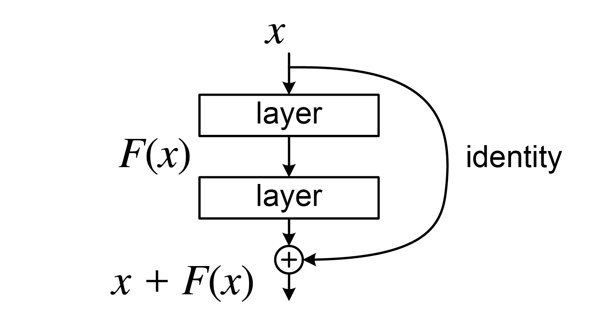
Intuition:
- Network learns residual \(\mathcal{F}(\mathbf{x})\) (deviation from identity)
- If identity is optimal, \(\mathcal{F}\) can learn to output zeros (easy)
- Standard networks must learn identity via complex weight configurations (hard)
Implementation:
class ResidualBlock(nn.Module):
def __init__(self, channels):
super().__init__()
self.conv1 = nn.Conv2d(channels, channels, 3, padding=1)
self.bn1 = nn.BatchNorm2d(channels)
self.conv2 = nn.Conv2d(channels, channels, 3, padding=1)
self.bn2 = nn.BatchNorm2d(channels)
def forward(self, x):
residual = x
out = F.relu(self.bn1(self.conv1(x)))
out = self.bn2(self.conv2(out))
out += residual # Skip connection
out = F.relu(out)
return outWhen dimensions change: Use 1×1 conv projection: \[\mathbf{y} = \mathcal{F}(\mathbf{x}) + \mathbf{W}_s \mathbf{x}\]
where \(\mathbf{W}_s\) adjusts channels or resolution.
Benefits:
- Gradient Flow: Gradients bypass \(\mathcal{F}\) via skip connection → mitigates vanishing gradients
- Ensemble View: Network behaves like ensemble of shorter paths
- Enables Depth: ResNet-152 (152 layers) trains successfully
Interview Question: “Why do residual connections help?” Answer:
- Optimization—easier to learn deviations from identity,
- Gradient flow—skip connections provide direct path for gradients,
- Implicit ensembling—exponentially many paths of different lengths.
Image Classification Task
Task Definition: Given image \(\mathbf{I} \in \mathbb{R}^{H \times W \times 3}\), predict class label \(c \in \{1, \ldots, C\}\) with confidence \(p \in [0,1]\).
ImageNet Challenge: The canonical benchmark driving CNN architecture evolution:
- ImageNet-1K (ILSVRC): 1.28M training images, 1000 classes
- Top-1 Accuracy: \(\arg\max_c p(c|\mathbf{I})\) is correct class
- Top-5 Accuracy: Correct class in top 5 predictions (easier metric)
Standard Pipeline:
Image (224×224×3) → CNN Backbone → Global Pooling
→ Fully Connected → Softmax → Class ProbabilitiesData Preprocessing:
- Normalization: Mean subtraction, standard deviation division (per channel)
- ImageNet: \(\mu = [0.485, 0.456, 0.406]\), \(\sigma = [0.229, 0.224, 0.225]\)
- Resizing: Center crop 224×224 from 256×256 (inference)
Data Augmentation (training only):
- Spatial: Random crops, horizontal flips, rotations (±15°)
- Color: Brightness/contrast jittering, hue shifts, grayscale conversion
- Advanced: Mixup, CutMix, RandAugment, AutoAugment
Why Augmentation Matters: CNNs are data-hungry—augmentation acts as powerful regularization, often improving top-1 accuracy by 2-5% on ImageNet.
Evolution:
- 2012: AlexNet (60% top-1) → Deep learning breakthrough
- 2015: ResNet-152 (77% top-1) → Enabled ultra-deep networks
- 2021: ViT-Huge (88.5% top-1) → Transformers match/exceed CNNs
Interview Note: Classification is the foundation—architectures proven here (ResNet, EfficientNet) become standard backbones for detection, segmentation, and other downstream tasks.
3.6 CNNs: Classic Architectures
3.6.1 LeNet-5 (1998) - The Pioneer
Architecture: Conv(6) → Pool → Conv(16) → Pool → FC(120) → FC(84) → FC(10)
Historical Context:
- First successful application of backprop to CNNs
- Digit recognition (MNIST, postal codes)
- ~60K parameters (tiny by modern standards)
Legacy: Established conv-pool-fc pattern used for 15+ years.
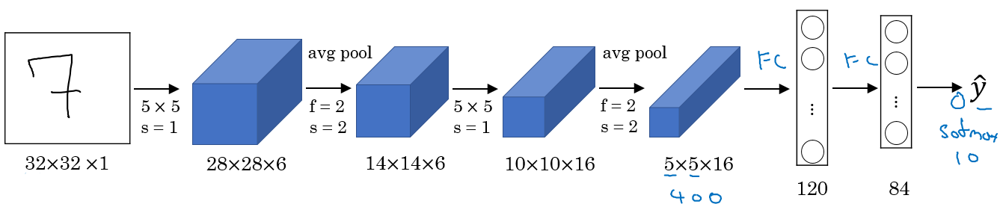
3.6.2 AlexNet (2012) - Deep Learning Renaissance
Architecture:
- 5 conv layers, 3 fc layers
- 60M parameters
- First use of ReLU (vs. tanh/sigmoid)
- Dropout for regularization
- Data augmentation (crops, flips, color jittering)
Innovation - ReLU Activation: \[\text{ReLU}(x) = \max(0, x)\]
vs. Sigmoid \(\sigma(x) = 1/(1+e^{-x})\):
- No saturation for positive values (gradient = 1)
- 6× faster training convergence
- Sparse activation (many zeros)
Impact:
- Won ImageNet 2012 (15.3% error vs. 26.2% runner-up)
- Triggered deep learning boom
- Demonstrated GPU training feasibility
Interview Insight: “What made AlexNet revolutionary?” Answer:
(1) Scale—first deep CNN on ImageNet,
(2) ReLU—enabled training deeper networks,
(3) Engineering—GPU implementation, dropout, data augmentation at scale.
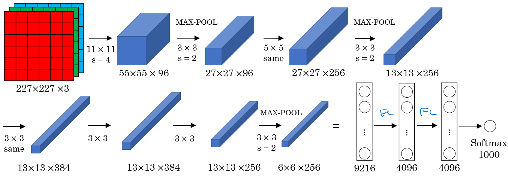
3.6.3 VGG-16 (2014) - Simplicity and Depth
Design Philosophy:
- Uniform architecture: only 3×3 convs, 2×2 max pooling
- Deeper is better (16-19 layers)
Why 3×3?
- Two 3×3 convs = 5×5 receptive field with fewer parameters
- Three 3×3 convs = 7×7 receptive field
- More non-linearities (ReLU after each conv)
Parameters: 138M (VGG-16)—very large by 2014 standards
Trade-off:
- ✓ Simple, uniform design
- ✓ Strong performance
- ✗ Memory intensive (13 conv layers × large feature maps)
- ✗ Many parameters in FC layers
Legacy: Showed depth matters, established 3×3 as standard kernel size.
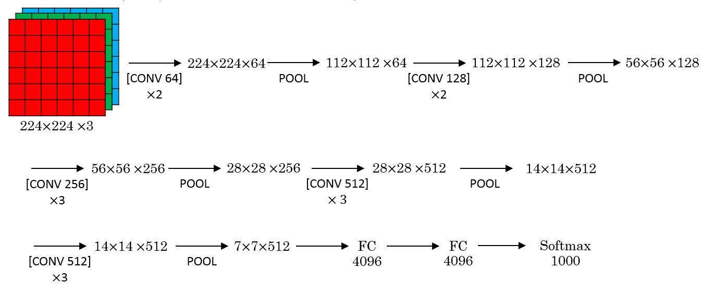
3.6.4 ResNet (2015) - Enabling Ultra-Deep Networks
Variants: ResNet-18, 34, 50, 101, 152 (number = layers)
Architecture (ResNet-50):
- Conv1 (7×7, stride 2)
- MaxPool (3×3, stride 2)
- 4 “stages” of residual blocks
- Stage 2: 3 blocks, 256 channels
- Stage 3: 4 blocks, 512 channels
- Stage 4: 6 blocks, 1024 channels
- Stage 5: 3 blocks, 2048 channels
- Global Average Pooling
- FC (2048 → num_classes)
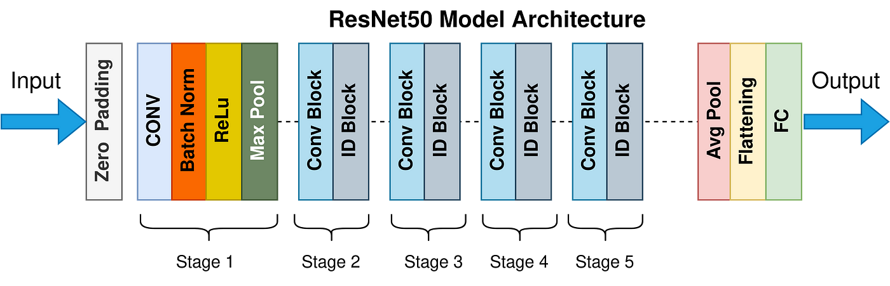
Bottleneck Block (ResNet-50+):
1×1 conv (reduce channels 4×)
→ 3×3 conv
→ 1×1 conv (expand channels 4×)
→ Add skip connectionWhy Bottleneck? Reduces computation:
- Standard: \(3 \times 3 \times 256 \times 256 = 589{,}824\) ops
- Bottleneck: \(1 \times 1 \times 256 \times 64 + 3 \times 3 \times 64 \times 64 + 1 \times 1 \times 64 \times 256 = 69{,}632\) ops
Impact:
- ILSVRC 2015 winner (3.57% error)
- Standard backbone for detection, segmentation
- Demonstrated 1000+ layer networks are possible
3.6.5 Inception (GoogLeNet, 2014)
Key Idea: Use multiple kernel sizes in parallel—let the network choose.
Inception Module:
Input
├─ 1×1 conv
├─ 1×1 conv → 3×3 conv
├─ 1×1 conv → 5×5 conv
└─ 3×3 MaxPool → 1×1 conv
↓
Concatenate along channel dimension1×1 Convolution Role:
- Dimensionality reduction (cheaper than 3×3, 5×5 directly)
- Cross-channel mixing
- Additional non-linearity
Example: To compute 5×5 conv with 256 input and output channels:
- Direct: \(5 \times 5 \times 256 \times 256 = 1{,}638{,}400\) params
- With 1×1 bottleneck (256→64→256): \(1 \times 1 \times 256 \times 64 + 5 \times 5 \times 64 \times 256 = 425{,}984\) params
Trade-off: More architectural complexity vs. parameter efficiency and multi-scale features.
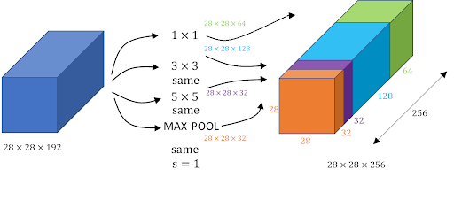
3.7 CNNs: Design Principles
Principle 1: Depth Over Width
- 50-layer ResNet outperforms 10-layer wider network
- Hierarchical feature learning requires depth
Principle 2: Small Filters (3×3)
- Stack of 3×3 > single large filter
- More non-linearity, fewer parameters
- VGG, ResNet, modern architectures use 3×3 almost exclusively
Principle 3: Skip Connections for Depth
- Essential for networks >30 layers
- DenseNet: connect ALL previous layers
Principle 4: Bottlenecks for Efficiency
- 1×1 conv reduces channels before expensive 3×3/5×5
- Inception, ResNet-50+, MobileNet all use this
Principle 5: Reduce Spatial Dimensions Gradually
- Early aggressive pooling loses information
- Modern: stride-2 convs at specific points (ResNet stages)
Principle 6: Increase Channels as Resolution Decreases
- Compensate for spatial reduction with more features
- Pattern: 64 → 128 → 256 → 512 → 1024 channels
Interview Question: “Design a CNN for 512×512 images with limited compute.”
Answer Framework:
- Early aggressive downsampling (7×7 stride-2, then 3×3 stride-2) → 128×128
- Depthwise separable convs (MobileNet-style)
- Fewer stages (3 instead of 5)
- Bottleneck blocks with small expansion factor
- Global average pooling (no FC layers)
3.8 Summary and Interview Preparation
3.8.1 Common Interview Questions
3.8.2 Interview Preparation Tips
- Architectural depth: Know parameter counts, FLOPs for common models
- Training dynamics: Batch size effects, learning rate schedules, convergence
- Trade-offs: Accuracy vs. speed, memory vs. compute, model size vs. performance
3.8.3 Further Reading
- Convolutions: CS231n Notes